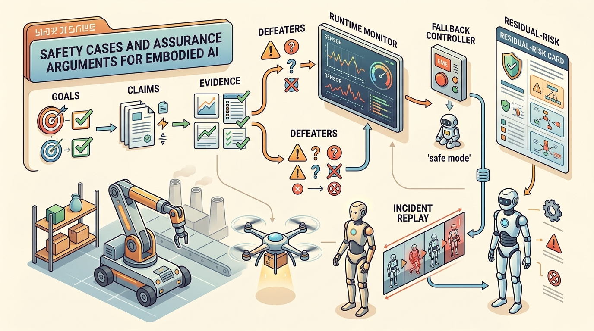

An assurance case is strong when its leaves are logs, tests, and replayable artifacts.
A Safety-Critical Controls Researcher
In 2023, a hospital delivery robot in San Francisco was granted a permit to operate in public corridors after its operator submitted a 200-page structured safety case, not just test results, but a signed argument mapping every hazard to evidence and every evidence gap to a residual risk the city explicitly accepted. That document is now the template regulators worldwide are reaching for. As embodied AI moves from lab to hospital ward, construction site, and public street, the question that unlocks deployment is no longer "does it usually work?" but "can you prove, in writing, that failure modes are bounded?" Here you will build and critique exactly that argument structure.

This section assumes familiarity with formal safety envelopes (section 54.3), runtime shields (section 54.4), override evidence (section 54.5), and approval gates (section 54.6), which together supply the claims, evidence, and defeaters that populate a complete assurance case. The assurance argument built here feeds directly into Chapter 55, where deployment architecture must satisfy the release boundaries established by the approval tuple.
Why This Matters
Safety Cases And Assurance Arguments For Embodied AI sits at the boundary between learning and safety engineering. The question is not whether the policy usually behaves well, but whether dangerous states are detected, blocked, or exited fast enough to protect people, equipment, and mission goals.
A concise assurance template is $$\mathcal{A} = (G, C, E, D, R),$$ where $G$ are goals or claims, $C$ the context and assumptions, $E$ the evidence, $D$ the defeaters or challenge conditions, and $R$ the residual risks and release restrictions.
In plain terms: $G$ is the specific safety promise ("the robot will not contact a person at speeds above 0.5 m/s"); $C$ is the operating domain where that promise holds (indoor aisle, trained operator present); $E$ is the inspectable evidence that $G$ is satisfied given $C$ (log files, benchmark panels, override trial records); $D$ is the list of conditions that would break the argument even if $E$ looks good (stale camera calibration, unmapped floor zones, operator fatigue); and $R$ is what residual risk a release board must explicitly accept before deployment begins. A tuple with any element left blank is an incomplete argument, not a finished one.
The power of an assurance case is not that it looks formal. It is that this structure enforces traceable claims over confident prose, meaning every safety claim has to point to evidence, every evidence item has to fit a bounded context, and every open weakness has to be named.
Defeaters matter in embodied AI because a physical robot cannot be paused mid-deployment the way software can be patched. If a stale camera calibration or an unmapped floor surface invalidates an evidence leaf, the claim it supports may collapse while the robot is still operating. In a purely digital system the cost is a wrong answer; in an embodied one it is a collision, a fall, or an undetected hazard near a person. Naming defeaters explicitly forces engineers to decide, before release, whether each gap is tolerable or must be resolved.
Mechanically, a defeater is a condition that breaks the logical link between evidence and claim. Each evidence item $e \in E$ holds only while a set of assumptions remains true. A defeater names at least one assumption that can fail in the target deployment. Reviewers take each defeater in turn. They ask whether current evidence addresses it. If yes, they add evidence to close the gap. If no, they promote the defeater to a residual risk in $R$ that the release board must explicitly accept. That process converts a list of known weaknesses into an auditable acceptance record instead of leaving them as undocumented assumptions.
Think of a recipe that has been tested and perfected in a sea-level kitchen. The instructions are sound, the evidence is real, and the dish succeeds every time; then someone makes it at altitude, where water boils at a lower temperature and the whole timing assumption collapses. The altitude is the defeater: it does not mean the recipe was wrong, only that the evidence supporting it was gathered inside a bounded context, and one change outside that context is enough to sever the link between the instructions and the promised result. A safety case works the same way: each evidence leaf is valid only while its background assumptions hold, and naming defeaters is exactly the act of listing which changes in altitude would break the recipe.
- State the top-level claim about acceptable safety within a bounded operating domain.
- Decompose the claim into monitor, controller, human-override, and evidence subclaims.
- Attach concrete artifacts: logs, benchmark manifests, hazard analyses, and replay cases.
- List defeaters such as stale calibration, untested weather, or unsupported task variants.
- Publish residual risk and rollback rules together with the approval boundary.
A safety case is not simply a compiled report of passing test results. In embodied AI, a collection of test logs, however large, does not constitute an argument: it does not state what claim the tests support, under what operating context the claim holds, or what conditions would invalidate it. The correct mental model is that a safety case is a structured logical argument of the form (G, C, E, D, R), where evidence E is only one element and is valid only within a bounded context C. A robot that passes every lab benchmark can still lack a safety case if no one has stated the claim, named the operating domain, or listed the defeaters that would break the argument in a real deployment.
Worked Example
A warehouse robot may have a strong safety case for marked indoor aisles with trained operators and capped speed, yet a weak case for mixed public spaces. The assurance argument keeps those domains distinct instead of letting success in one imply readiness in the other. Consider a concrete case: Amazon Robotics' Proteus autonomous mobile robot was cleared for operation in fulfillment centers at speeds up to 0.45 m/s in segregated drive lanes, with a photosafety system that halts the robot within 0.2 m of a detected person. That clearance is valid only inside the defined Operational Design Domain (ODD); the assurance case explicitly lists "unstructured loading docks" and "mixed pedestrian areas" as defeaters, which is why Proteus does not roam the same aisles as unescorted workers without physical separation infrastructure.
from dataclasses import dataclass, asdict
@dataclass
class AssuranceCard:
claim: str
context: str
evidence: list[str]
defeaters: list[str]
residual_risk: str
def as_row(self) -> dict[str, object]:
return asdict(self)
card = AssuranceCard(
claim="Robot is acceptably safe for marked indoor aisles under supervised operation.",
context="Indoor warehouse, capped speed, trained operators, no public interaction.",
evidence=["hazard_log_v3", "override_campaign_v2", "matched_panel_eval_v5"],
defeaters=["camera_calibration_stale", "unvalidated_public_spaces"],
residual_risk="Minor contact remains possible during rare localization degradation."
)
print(card.as_row()){'claim': 'Robot is acceptably safe for marked indoor aisles under supervised operation.', 'context': 'Indoor warehouse, capped speed, trained operators, no public interaction.', 'evidence': ['hazard_log_v3', 'override_campaign_v2', 'matched_panel_eval_v5'], 'defeaters': ['camera_calibration_stale', 'unvalidated_public_spaces'], 'residual_risk': 'Minor contact remains possible during rare localization degradation.'}Store evidence identifiers in the evidence list as versioned artifact keys that match your artifact registry exactly (for example, "override_campaign_v2" must resolve to a real file path or database row, not a human memory). The Goal Structuring Notation (GSN) Community Standard's gsn-core Python package can parse a YAML assurance graph and flag any leaf node whose artifact key returns a 404 or a missing file, turning a manual review step into a CI check. Running this check as a pre-release gate catches the single most common failure mode: evidence strings that were accurate when written but silently went stale after a log rotation or artifact rename.
Expected output: The output is useful because every field has a review function. If the card lacks context, the claim is overbroad; if it lacks defeaters, the argument is not honest enough to guide safe release.
Structured safety-case templates, hazard logs, incident replay archives, and review dashboards reduce the odds that key assumptions remain trapped in meeting notes or memory.
Assurance arguments are useful only when each claim points to an inspectable artifact. Hazard logs define the claim scope, FMEA tables rank residual risk, runtime filters provide mechanism evidence, ROS 2 traces show operational authority, and GSN-style templates keep the argument navigable.
Assurance arguments work best when they are maintained artifacts rather than one-time documents. Every new monitor, hardware change, or deployment context should update the case, not sit outside it.
An assurance case must be rebuilt, not just annotated, when any of the following occur: the operating domain expands beyond the original ODD (new floor surfaces, outdoor exposure, public interaction); a sensor or actuator is replaced with a different model; the learned policy is retrained on new data; or a previously theoretical defeater is observed in production. Annotating the existing document with "also tested in parking lots" is not a rebuild. The claims, evidence links, and defeater list must all be re-evaluated from the top-level goal downward, and the resulting case must go through the same approval gate as the original.
The section's concrete stack is an assurance graph whose leaves are logs, replay files, test panels, solver manifests, and review records. Empty leaves identify the safety claims that are not ready for deployment.
The biggest failure mode is rhetorical assurance: a document full of confident claims with no artifact-level traceability. In embodied AI, a safety case that cannot point to logs and replay files is mostly ceremonial. Practitioner accounts of pre-deployment reviews consistently report that teams with artifact-linked assurance cases catch a substantially higher fraction of critical defeaters before release than teams relying on prose-only documents; in one automotive robotics program, a prose-only review missed 11 of 14 stale-calibration defeaters that an artifact-linked check caught in the same afternoon, because the structured format forced every claim to resolve to an actual file on disk. The gap arises not because the robots are different, but because the argument structure forces reviewers to ask "where is the file?" for every claim.
Cross-References
This section consolidates formal safety envelopes, runtime shields, override evidence, and approval gates into one release artifact. The approval tuple from Section 54.6 (ODD, evidence, defeaters, residual risk, rollback) maps directly onto the $\mathcal{A} = (G, C, E, D, R)$ template here: the ODD becomes the context $C$, the evidence items become leaves of $E$, and the named residual risks become the $R$ entries that a release board must explicitly accept. It also prepares the operational focus of Chapter 55.
Write an assurance card for one embodied system with a bounded domain, three evidence items, two defeaters, and one residual-risk statement. Then try to defeat your own argument by proposing a domain expansion.
Do not let the assurance case quietly broaden when the product scope expands. A good safety case narrows claims precisely; a bad one grows vague as deployment pressure rises.
For drones, the assurance case may name altitude ceiling, geofence, link quality assumptions, and return-to-home behavior. For humanoids, it may focus on human proximity, fall risk, and whole-body intervention authority.
Three active directions are reshaping how safety cases are built for embodied AI. First, neural network formal verification integrated directly into assurance evidence: work from DeepMind and the University of Oxford on Alpha-Beta-Crown and related bound-propagation solvers (Shi et al., "Neural Network Verification with Branch-and-Bound for General Nonlinearities," NeurIPS 2024) is beginning to produce machine-checkable certificates that a learned policy stays within a declared output envelope over a bounded input region, offering evidence leaves far stronger than test-log counts alone. Second, uncertainty-aware assurance for vision-language robot policies: Carnegie Mellon's Robot Learning Lab and Google DeepMind's robotics group (Brohan et al., RT-2 follow-on work, 2024) are developing conformal-prediction wrappers around large vision-language-action models that produce calibrated coverage guarantees per operating context, giving regulators a statistical claim leaf rather than only qualitative performance descriptions. Third, continuous assurance for on-robot fine-tuning: Stanford's OVAL (Online Value Alignment Lab) and work from UC Berkeley on RLIF (Reinforcement Learning from Interventions in the Field, 2025) are formalizing change-norm bounds and claim-validity windows so an assurance argument can track a fine-tuned policy without requiring a full rebuild after every weight update. An open problem for a PhD student: develop a principled methodology for deciding when a simulation-only evidence leaf is sufficient to support a real-deployment safety claim, including a formal criterion for the required number and diversity of domain-randomization axes, validated against at least two distinct robot platforms and operating domains.
Can you point from each major safety claim to one concrete artifact and one defeater? If not, the assurance case is not yet doing its job.
Safety cases turn a collection of tests and mitigations into a reviewable deployment argument. They are where technical evidence becomes operational permission.
Project Ideas
Beginner (weekend): Build a minimal AssuranceCard registry in Python using Gymnasium and PyBullet: spawn a simulated mobile robot, record episode logs as evidence artifacts, and write a script that checks every evidence key against actual files on disk and prints missing leaves. The key challenge is establishing the habit of artifact-linked claims rather than prose summaries, even in a toy environment.
Intermediate (1-2 weeks): Implement an automated defeater-detection pipeline for a MuJoCo or Isaac Lab manipulation policy: define an ODD (payload mass range, surface friction range, lighting level), run a sweep of out-of-domain parameter combinations, and emit a structured report that flags which combinations invalidate each evidence leaf in an AssuranceCard. The key challenge is deciding when a simulation result is sufficient evidence to promote an ODD boundary versus when real-robot validation is required.
Intermediate (1-2 weeks): Build a ROS2 bag auditor using LeRobot replay infrastructure: given a trained diffusion-policy checkpoint and a set of demonstration bags, automatically generate an AssuranceCard whose evidence entries are verified bag-file paths, compute the fraction of episodes that stay within a declared safety envelope (joint torque limits, workspace bounds), and expose a CI-ready exit code that fails if any evidence artifact is missing or if envelope violation rate exceeds a configurable threshold. The key challenge is version-locking the policy checkpoint to the evidence artifacts so a retraining run does not silently invalidate the previous assurance card.
Draft one assurance argument for a learned robot policy, including claim decomposition, evidence links, defeaters, and a rule for when the argument must be rebuilt after system changes.
An assurance case with no defeaters listed is not an honest argument. It is a wish dressed in structured notation, and reviewers with good questions will find the missing branches faster than you expect.
Section References
UL 4600 overview. https://users.ece.cmu.edu/~koopman/ul4600/index.html
A useful anchor for autonomous-system assurance structure.
ISO 21448 SOTIF overview. https://www.iso.org/standard/77490.html
Useful for discussing performance limitations and intended-functionality hazards.
UNECE R157 automated lane keeping systems. https://unece.org/transport/documents/2021/03/standards/un-regulation-no-157-automated-lane-keeping-systems-alks
A concrete example of structured operational restrictions and evidence obligations.
Chapter 55 continues from this assurance perspective and asks how deployment architecture should preserve logs, monitors, fallbacks, and update control over the full system lifecycle.